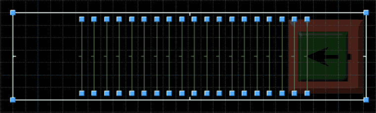

Monster Tunnels
Macros are not the only way to run scripted sequences in Doom 64, as there is another technique called "monster tunnels". This alternative technique takes advantage of monsters being able to trigger linedefs as they cross them when the "Trigger By Dead Things" flag is enabled. So although only one macro can be run at a time, multiple monster tunnels can be used at once and in conjunction with macros (this map has multiple monster tunnels).
The gist of a monster tunnel is a narrow hallway outside of a map with a monster at one end of the hallway. The width of the hallway should be just a tad larger than the width of the monster’s hitbox. This narrowness will cause the monster to travel the length of the hallway and oscillate between the two extreme ends (due to the movement logic) when alerted. Then add linedefs to this hallway and set them up with actions as you normally would. Don’t forget to use the "Trigger By Dead Things" flag and “Cross” activation type flag on each line. If you would like the actions to be repeatable also use the “Repeatable” activation type flag on the linedefs. When the monster is alerted, it will cross the first linedef, activate it, then proceed to the next linedef in sequence. By spacing out the linedefs and using different monster types you can adjust their timing. In this state the monster will re-trigger the linedef in reverse order. To have it only go in one order, at the end of the hallway have a silent teleporter (telestomp) move the monster back to the beginning of the hallway. When the monster tunnel is done it is courteous to kill the monster with a crusher and a 666 sector special (perhaps at level exit), so the player can achieve 100% kills when beating the level.
Theoretically almost any macro can be replicated as a monster tunnel. Even if the corresponding macro action doesn’t appear as a linedef action in Doom Builder 64, it is still activatable with the corresponding number in the actions list. The macro actions which take two values, the second value can be set initially with the “Set Global Integer” (action 204) linedef action and the corresponding tag number (negative numbers work in Doom Builder 64 Enhanced). Note that there is only one “global integer” and it will be changed in macros that take a second number, or if that linedef is activated elsewhere. This can cause macros/monster tunnels to either scramble each other or communicate with each other.
Although the "global integer" can be used as intra-monster tunnel/macro communication, one monster tunnel raising and lowering sectors in another tunnel is less susceptible to error and interference from other scripted sequences. By lowering a barrier floor (sector) an alerted monster can be freed to reach another part of the sequence. Also by crushing the monster by lowering the whole sector ceiling, a sequence can be stopped as well.